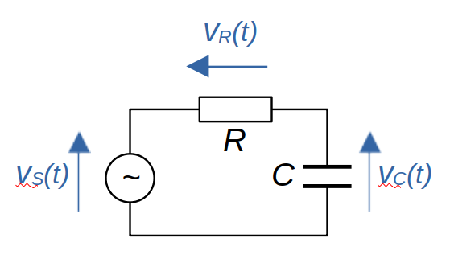
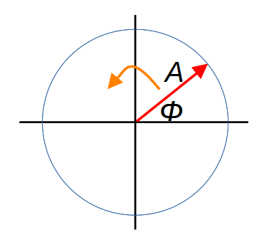
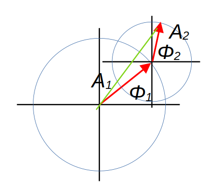
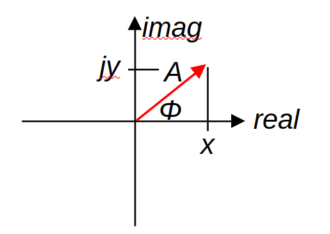

Why do we use 'complex impedance' in electrical engineering?
 When I was an undergraduate student in electrical engineering, forty-odd years ago, I learned
in circuit theory classes
that the impedance of a capacitor, ZC was
When I was an undergraduate student in electrical engineering, forty-odd years ago, I learned
in circuit theory classes
that the impedance of a capacitor, ZC was
where ω = 2πf was the angular frequency, and C the capacitance. The symbol j, I was told, was the 'square root of minus one', whatever that means.
Note:
Other disciplines usually use i for this quantity.
The impedance of a capacitor, it seems, is an imaginary number. Assemblies of components might have a 'complex impedance' -- a kind of resistance that might be real or imaginary, or some combination of the two. When I asked my teachers what a 'complex impedance' actually represented, in real-world terms, the response I typically received was "it's just a trick that makes the math easier" or, worse, "we don't ask questions like that". I took this to mean that my teachers didn't know the answer. More charitably, these days I feel that they probably did have some kind of understanding, but didn't know how to articulate it. I sympathise -- I, too, have an understanding that I find hard to articulate. But, in this article, I will try.
To be fair, the answer "it makes the math easier" is a reasonable one. Many students will not need a more detailed explanation that that. I can assure you that having a thorough, rigorous understanding of complex impedance will not make it any easier to solve real-world problems: the algebra and trigonometry will be just as fiddly. For better or worse, in engineering we have all sorts of weird tricks that exist solely to make the math tractable.
It turns out that if we take the impedance of a capacitor or an inductor to be imaginary, we can use familiar principles of circuit theory, likes Ohm's law and Kirchoff's laws, to analyze circuits containing these elements. We could go a bit further, and say that multiplying by j has the effect of introducing a 90-degree phase shift between voltage and current, which is what we observe in capacitors and inductors. But it's not clear why that should be the case, or even the circumstances in which it's true.
This article is my attempt to explain, from first principles, why complex arithmetic is so powerful when analyzing circuits containing capacitance and inductance. I'm assuming that the reader already knows how to apply the method in practice, and wants to know why it works. I'm certainly not going to attempt to explain how to solve real-world problems. I'm also assuming some basic familiarity with calculus, vectors, and complex numbers.
Fundamentally, I'm going to try to demonstrate the truth of this statement:
Doing arithmetic using complex impedances amounts to solving a differential equation, with phasors as the variables.
Along the way, I'll have to explain what a 'phasor' is. The explanation will be a long one, I'm afraid, as I'm trying to be as thorough as possible.
Electrical circuits as differential equations
I'll start by illustrating how we might analyze a circuit if we don't have a concept of complex impedance.
Consider the simple RC circuit below. A capacitor and a resistor are in series, and supplied by a sinusoidally-varying voltage vS(t). The "(t)" here indicates that this supply voltage is time-varying, and I shall try to be rigorous and use this notation for all time-varying quantities, even though it makes the equations a little cluttered.

In this example, we'd like to work out the voltage across the capacitor, vC(t). Let's look at how we could work it out without the use of the mathematics of complex impedance. To do that, we're going to need to write an equation for the relationship between vC(t) and vS(t), and then solve that equation for vC(t). As we'll see, that relationship will be a differential equation.
Since R and C are in series, the voltages across them must sum to the supply voltage.
$$ v_S(t) = v_R(t) + v_C(t) $$The currents in R and C will be equal, so we have
$$ i_C(t) = i_R(t) = \frac{v_R(t)}{R} $$The current through a capacitor is proportional to the derivative of its voltage:
$$ i_C(t) = C ~ v_C'(t) $$With some algebra we can combine these expressions, and end up with the following equation relating vC(t) and vS(t):
$$ v_C'(t) + \frac{1}{RC} v_C(t) = \frac{1}{RC} v_S(t) $$This is a first-order differential equation which we may, or may not, be able to solve easily -- whether we can solve it depends on vS(t). Let's assume -- as we more-or-less have to for what follows -- that vS(t) is a simple cosine function.
$$ v_C'(t) + \frac{1}{RC} v_C(t) = V_S cos (\omega t) $$The capital 'V' in 'VS' denotes that this quantity VS is not time-varying -- it's just the peak amplitude of the supply voltage. Of course, cos(ωt) is time-varying.
As I mentioned earlier, 'ω' here is the angular frequency -- it's just 2πf, where f is the ordinary frequency in Hertz. Some writers use ω, and some use 2πf; they mean the same thing, but ω is shorter.
Can we solve this differential equation? We can if we already know the answer, and we kind-of do. We know that vC(t) will be a sinusoid of the same frequency as the supply voltage, but of a different amplitude and phase. We know that because all that capacitors, inductors, and resistors can do is alter the amplitude and phase relationships between voltage and current. These components -- so long as they are 'ideal' -- cannot introduce any new frequency components.
So we can write the 'answer' (which is a guess) as
$$ v_C(t) = V_c cos (\omega t + \phi) $$Again, I'm writing a capital V here because VC is the peak voltage across the capacitor, and is not time varying. Our task is to subtsitute this vC(t) into the differential equation, perform the differentiation v'C(t) and, after a good deal of tedious algebra, end up with an expression for vC(t) in terms of things we know.
I'm not going to do this calculation; I'm not even going to quote the result. There are a gazillion places you can look it up if you want. My point is that the algebra is nasty, and the result is not very illustrative. And this is just for a three-component circuit; you can imagine how hard tedious it would be, if there were many components.
If we were using a DC circuit, with many resistances arranged in complicated ways, the analysis wouldn't be difficult. It might be tedious, but it wouldn't amount to solving a bunch of differential equations. Using AC makes things more difficult because capacitors and inductors aren't resistances. We can write an expression for the voltage across a capacitor, and the current in it; so we can, in theory, divide the one by the other to get an expression for the capacitor's 'resistance':
$$ R = v_C(t) / i_C(t) = \frac{v_C(t)}{C ~ v_C'(t)} $$The problem with this 'resistance' is that it's time-varying. Even if we can evaluate it -- and we can in this case -- we can't really use it in DC circuit theory techniques because it's not a constant.
What we need is some analogue of resistance that works with capacitors and inductors. This quantity, of course, is the impedance, and we'll see that using complex numbers removes the time-variability and leaves us a simple constant. And that's exactly what we need to simplify the analysis.
You spin me right round...
The fundamental insight that gave rise to the notion of complex impedance came from electrical engineer Charles Steinmetz, building on the work of mathematician Oliver Heaviside. Heaviside developed a kind of transform that turned differential equations into algebraic ones, and Steinmetz applied it to circuit analysis. All this work was done over a hundred years ago, but it caught on somewhat slowly. Steinmetz originally seemed to believe that engineers would not have sufficient mathematical knowledge to understand his method -- and he was probably right. But, as I've said, you don't need to understand the principles to apply the method successfully, as generations of students and teachers can confirm.
Steinmetz said that we should conceive of an alternating voltage or current as arising from a rotating vector. This vector was called a phase vector, later a phasor. As the vector rotates, its projection onto the axes traces out a sinusoid, whose amplitude is simply the length of the vector. If we project the rotating vector onto the x-axis, it describes a cosine function; onto the y-axis it describes a sine.

In the diagram above, A is the amplitude of the phasor, it's rotating at a speed of ω radians per second, and the voltage or current it represents would be A cos (ω t).
In Steinmetz's formulation, every voltage and current at any point in a circuit would be modeled as a phasor but -- and this is crucial -- all the phasors are rotating at the same speed. This must be the case, since capacitors and inductors can't change frequency. This means that, although we picture the rotation of the phasor as generating the sinusoidal signal, for the purposes of illustration we ignore the rotation. To an extent we can ignore it in the analysis, also. Instead, we think of the rotating phasors captured at an instant in time -- each phasor has its own amplitude, and will have a particular angle φ. This angle represents the difference in phase between a specific point in the circuit, and some reference point. In the RC circuit above, I might take the reference point to be the supply voltage, and call that 'zero phase'. All other points have non-zero values of φ; that is, they are out of phase with the supply voltage.
What makes all this useful is that we can do arithmetic with phasors: addition, subtraction, multiplication, division, and so on. The diagram below shows what phasor addition might look like.

In the diagram, the two red arrows are two phasors of different amplitude and phase, and the green arrow is their sum. In reality, all three arrows should be thought of as rotating but, as they are rotating at the same speed, we can ignore the rotation when doing calculations. I'm not going to prove formally that the green arrow's rotation generates a voltage that is the sum of the voltages generated by the two red arrows -- the proof is not conceptually difficult, but it's a lot of trigonometry.
I've said that the diagram above shows phasor addition but, if you're familiar with vectors, you may think it looks like vector addition. And, indeed, this is a helpful simplification. The vectors capture the phasors at some instant in time. If we know how to work with vectors, then we know how to work with phasors.
And so to complex numbers
We've seen that we can represent voltages and currents as phasors, and manipulate them as vectors. I've stated (but not proven) that arithmetic with voltages and currents can be represented as arithmetic with phasors. I've also stated that, for the purposes of calculation, we can treat phasors as vectors. So far, however, I haven't mentioned complex numbers.
We could do phasor calculations using the arithmetic of vectors and, in some cases, we might find ourselves doing that. In practice, though, it simplifies the arithmetic if we make use of the fact that a two-dimensional vector -- which is what we have here -- can be represented as a complex number. I'm sure you've seen this before but, if not, the following diagram shows how it works.

In this diagram, the vector/phasor with amplitude A and phase φ can be viewed as a complex number x+jy where x = cos (φ) and y = j sin (φ). Why would we do this? This is the key step to understanding why complex impedances are useful: the voltage v(t) generated by a rotating phasor of amplitude A is
$$ v(t) = A ~ Re (e^{j \omega t + \phi}) $$where Re(x) means 'real part of complex number x'. Here, φ is the phase of the phasor, that is, the difference in phase between this phasor and the reference signal in the circuit. ω, again, is the (angular) frequency of the signal, and A the peak amplitude.
The origin of the expression above is not obvious, to say the least. It's isn't clear why raising e to the power jωt generates a sinusoid on varying time t. This vital, but deeply unintuitive, principle was worked out by Leonhard Euler in the 18th century. There are various ways to prove it, but I'm not going to do so here.
It perhaps still isn't clear why being able to write a phasor as a complex exponential actually helps us. Bear with me -- I'm getting there, honestly.
Complex exponentials follow similar principles of arithmetic as ordinary exponentials, so we can write the phasor expression above in a slightly different way:
$$ v(t) = A e^\phi Re (e^{j \omega t}) $$In any particular phasor, φ and ω are real-valued constants. This means that the time derivative of the phasor is just
$$ v'(t) = j \omega A e^\phi Re (e^{j \omega t}) $$More concisely:
$$ v'(t) = j \omega ~ v(t) $$Yes: differentiating a phasor amounts to multiplying it by jω. You'll remember that I started by showing how even simple circuits give rise to differential equations that are awkward to solve. But, by using phasors, we've effectively transformed a differential equation into an algebraic one. We can add, subtract, multiply, and divide phasors using the familiar rules of complex arithmetic, and we can differentiate them using simple multiplication.
To be honest, I should point out that phasors transform a differential equation into an algebraic equation in complex numbers, so the simplification isn't as great as we might hope. Circuit analysis is often still difficult, but less painfully so.
And so, at last, to the impedance of a capacitor
I started this article by asking why the impedance of a capacitor is
$$ Z_C = \frac{1}{j \omega C} $$Here's why. Let's represent the voltage across the capacitor vC as a phasor, using the complex exponential notation:
$$ v_C(t) = V_C ~ e^\phi ~ Re (e^{j \omega t}) $$We can work out the current in the capacitor exactly as before, using
$$ i_C(t) = C ~ v_C'(t) $$But we know that differentiating a phasor is the same as multiplying by jω. So:
$$ i_C(t) = C ~ j \omega ~ v_C(t) $$We can now divide the capacitor's voltage by its current:
$$ v_C(t) / i_C(t) = \frac {v_C(t)}{C ~ j\omega ~ v_C(t) } $$The voltage terms on the right-hand side cancel, leaving us with this expression for the impedance of the capacitor:
$$ Z_C = v_C(t) / i_C(t) = \frac{1}{j \omega C} $$This way of representing the relationship between a capacitor's voltage and current works precisely because it is not time-varying. For a given capacitance, zC is a constant with units of volts over amps. It can therefore be used as if it were a resistance in circuit calculations. A similar principle can be applied to get the impedance of an inductor.
Summary
So, in summary, the effectiveness of complex impedances in circuit analysis follows from this chain of reasoning.
1. We can represent alternating voltages and currents as rotating vectors (phasors), on which we can do arithmetic.
2. A vector can be represented as a complex number.
3. A rotating vector can be represented as a complex exponential, with time in the exponent, governed by Euler's formula.
4. The complex exponentials of the form we use are easy to differentiate with respect to time, simply by multiplying by jω.
5. Using complex exponentials transforms differentiation into algebraic multiplication, albeit multiplication by a complex numbers.
6. Inductors and capacitors have voltage/current relationships that are governed by differentiation.
7. Because differentiation of phasors amounts to multiplication, time-dependent terms in the voltage/current relationships of capacitors and inductors cancel, and we can model them as resistors with complex-valued resistance, which we call complex impedance. We can analyse an LCR circuit using the same methods we use for resistances alone, so long as we quietly assume that the voltages and currents are phasors.
8. Doing arithmetic using complex impedances amounts to solving a differential equation, with phasors as the variables.
QED.